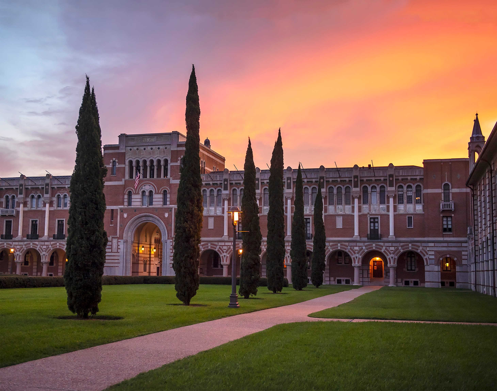

Welcome to RPMS.
The Rice Pre-Medical Society (RPMS) is an undergraduate student-based organization that aims to provide resources, advice, and opportunities to all Rice students interested in the health professions.
What's next.
Wednesday, November 17th, 2021 (6pm CST): RPMS Personal Statement Workshop